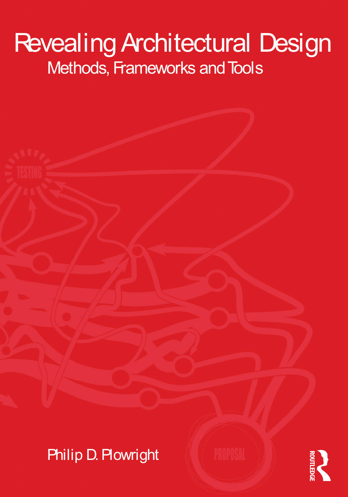
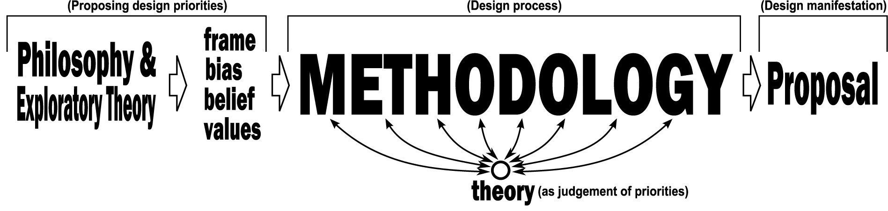
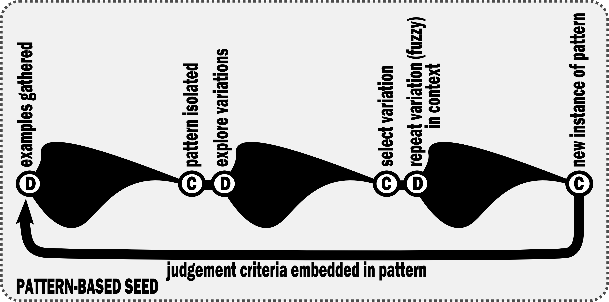
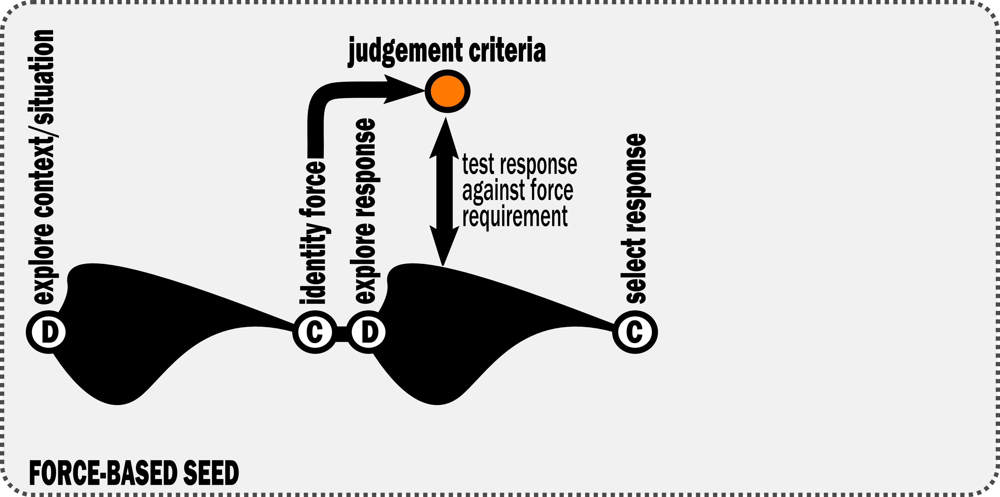
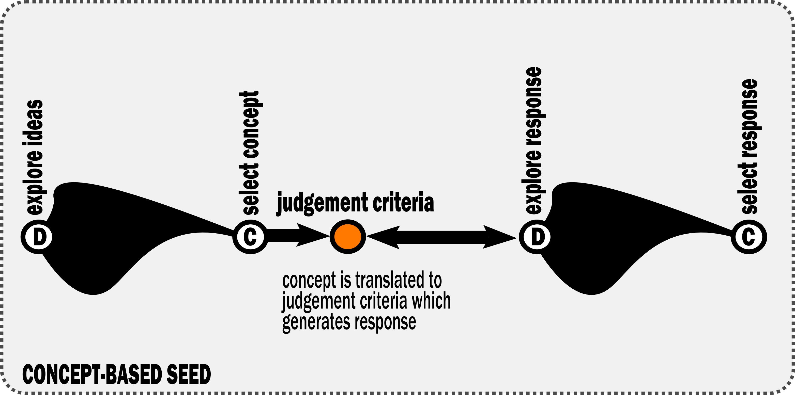

Architectural pedagogy has historically divided into two opposing camps: the Designer-Artist, who fears methodology undermines intuition, and the Designer-Scientist, who seeks a rigid, repeatable formula. Revealing Architectural Design rejects this binary. It argues that successful design relies on frameworks—meta-organizational structures that guide thinking without dictating outcomes.
This text rejects the "black box" myth of architectural creativity. It argues that design is a knowledge-based discipline that relies on explicit frameworks to manage complexity. The following concepts constitute the core operational syntax of the book.

Frameworks are meta-organizational structures. They are the scaffold for addressing content, not the content itself.
Definition: Design that begins with typological transfer. It identifies rules from existing precedents (patterns) and adapts them.
Primary Operation: Adaptation & Modification.
Bias: Cultural continuity, history, and efficiency.
Risk: Cliché (repetition without critical thought).

Definition: Design as a reaction to pressure. Form is generated by mapping external "forces" (data, site, program, time) to deform a neutral container.
Primary Operation: Mapping & Deformation.
Bias: Performance, emergence, and complexity.
Risk: Automation (loss of human intent).

Definition: Design driven by an abstract idea or metaphor. The building is a physical translation of a non-physical thought.
Primary Operation: Translation (Domain-to-Domain Transfer).
Bias: Meaning, semantics, and intellectual coherence.
Risk: Irrelevance (symbolism that fails to function).
